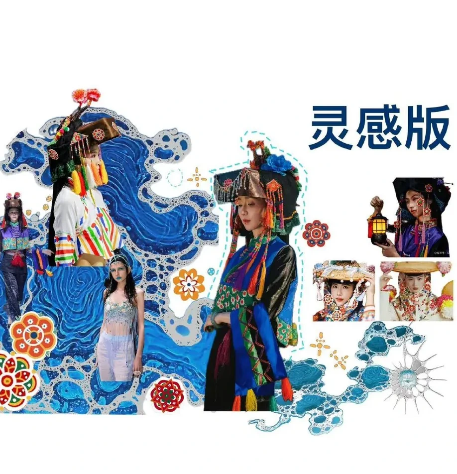
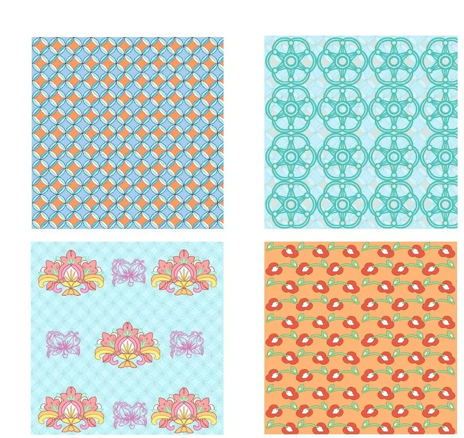
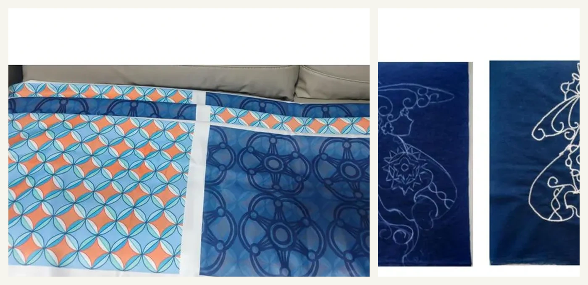
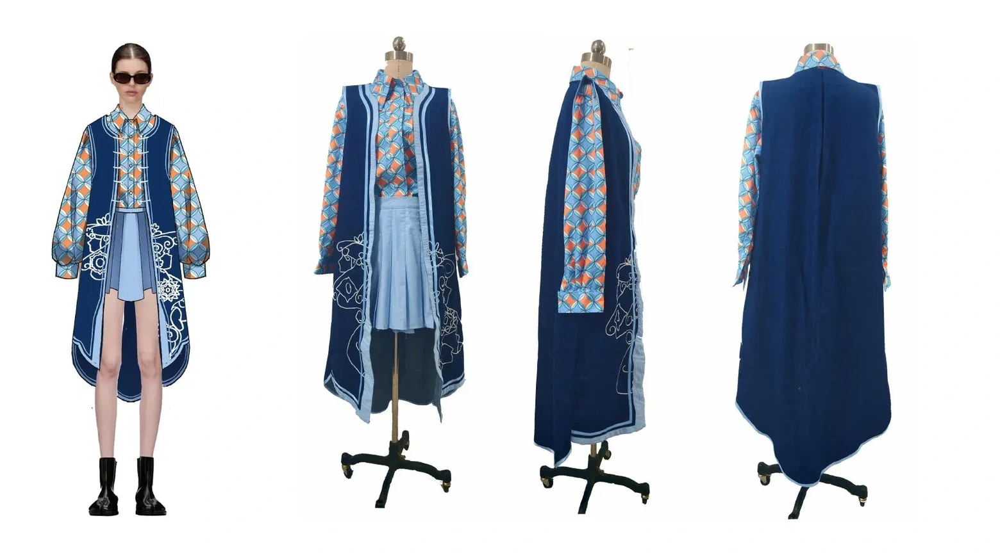
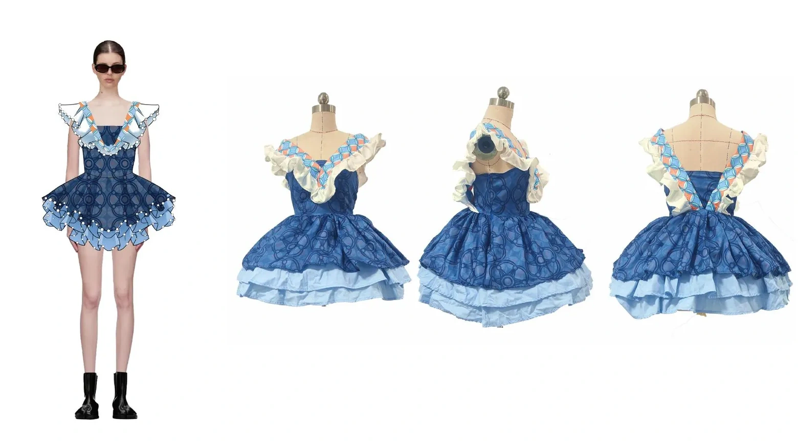
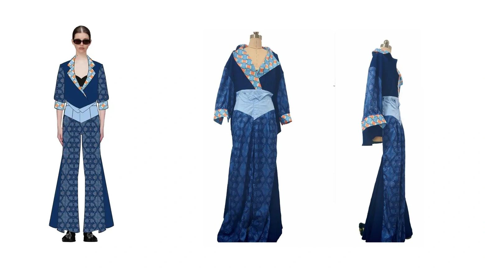
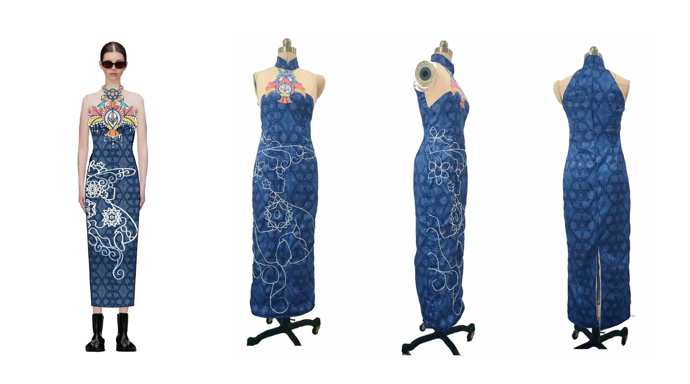

GRADUATION PROJECT / HUI'AN CULTURAL TRANSLATION
文化不是装饰，而是一套可以被重新组织的语言。
ResearchPatternMaterialGarment
RESEARCHMOTIFMATERIALGARMENT

01 / RESEARCH
先理解来源，再决定怎么现代化。
从惠安女服饰结构、传统纹样、色彩与工艺出发，同时观察当代女装秀场与日常穿着场景，明确哪些文化特征需要保留、哪些形式可以转译。


04 / GARMENT OUTCOME
把图案放回身体和真实材料里验证。



